<title>Primer mes de un hijo</title>
<meta name="claude:viewport-fit-sides" content="cover">
<link rel="preconnect" href="https://fonts.googleapis.com">
<link rel="stylesheet" href="https://fonts.googleapis.com/css2?family=Plus+Jakarta+Sans:wght@600;700;800&family=Inter:wght@400;500;600&family=JetBrains+Mono:wght@500;700&display=swap">
<style>
/* Recorrido en el móvil de Pablo: cada momento es una fila de pantallas de teléfono con tres notas al lado */
:root {
  --bg: #f6f8fa;
  --surface: #ffffff;
  --surface-2: #eef2f6;
  --ink: #0e2138;
  --ink-2: #3b4a5c;
  --muted: #5e6b7b;
  --line: rgba(14, 33, 56, 0.12);
  --accent: #047857;
  --accent-soft: #d6f3e7;
  --accent-ink: #065f46;
  --amber: #7a5208;
  --amber-soft: #fbefd2;
  --navy: #0e2138;
  --chat-bg: #e7efe4;
  --bubble: #ffffff;
  --bubble-ink: #0e2138;
  --link: #0a5fb4;
  --display: "Plus Jakarta Sans", system-ui, sans-serif;
  --body: "Inter", system-ui, sans-serif;
  --mono: "JetBrains Mono", ui-monospace, monospace;
}
@media (prefers-color-scheme: dark) {
  :root:not([data-theme="light"]) {
    --bg: #0b1626; --surface: #13233a; --surface-2: #1a2d47; --ink: #eef3f8; --ink-2: #c9d4e0; --muted: #94a3b8;
    --line: rgba(238, 243, 248, 0.14); --accent: #34d399; --accent-soft: #0f3b2e; --accent-ink: #a7f3d0;
    --amber: #f5c55b; --amber-soft: #3a2c0d; --navy: #060d18; --chat-bg: #142a20; --bubble: #1f3a2d; --bubble-ink: #eef3f8; --link: #8cc8ff; color-scheme: dark;
  }
}
:root[data-theme="dark"] {
  --bg: #0b1626; --surface: #13233a; --surface-2: #1a2d47; --ink: #eef3f8; --ink-2: #c9d4e0; --muted: #94a3b8;
  --line: rgba(238, 243, 248, 0.14); --accent: #34d399; --accent-soft: #0f3b2e; --accent-ink: #a7f3d0;
  --amber: #f5c55b; --amber-soft: #3a2c0d; --navy: #060d18; --chat-bg: #142a20; --bubble: #1f3a2d; --bubble-ink: #eef3f8; --link: #8cc8ff; color-scheme: dark;
}

* { box-sizing: border-box; }
body { background: var(--bg); color: var(--ink); font: 16px/1.6 var(--body); }
.wrap { max-width: 1120px; margin: 0 auto; padding-left: max(16px, env(safe-area-inset-left, 0px)); padding-right: max(16px, env(safe-area-inset-right, 0px)); padding-block: 0 80px; }
h1, h2, h3 { font-family: var(--display); letter-spacing: -0.02em; line-height: 1.12; margin: 0; text-wrap: balance; }
p { margin: 0; text-wrap: pretty; }
a { color: var(--accent); text-underline-offset: 3px; }
:focus-visible { outline: 2px solid var(--accent); outline-offset: 3px; }

.hero { background: var(--navy); color: #eef3f8; }
.hero .wrap { padding-block: 56px 44px; display: flex; flex-direction: column; gap: 22px; }
.hero h1 { font-size: clamp(34px, 5.6vw, 56px); font-weight: 800; color: #ffffff; max-width: 17ch; }
.hero p.lede { font-size: clamp(17px, 1.8vw, 19px); color: #d9e2ec; max-width: 64ch; }
.cast { display: flex; flex-wrap: wrap; gap: 10px; }
.cast span { font-size: 14px; padding: 7px 13px; border-radius: 999px; border: 1px solid rgba(238, 243, 248, 0.22); color: #e6edf4; }
.cast b { color: #ffffff; font-weight: 600; }
.path { list-style: none; margin: 6px 0 0; padding: 0; display: grid; grid-template-columns: repeat(auto-fit, minmax(128px, 1fr)); gap: 8px; counter-reset: p; }
.path li { counter-increment: p; font-size: 14px; color: #dbe4ee; }
.path li a { color: inherit; text-decoration: none; display: flex; flex-direction: column; gap: 6px; padding: 10px 12px; border-radius: 10px; background: rgba(238, 243, 248, 0.06); height: 100%; }
.path li a:hover { background: rgba(238, 243, 248, 0.12); }
.path li a::before { content: counter(p); font: 700 13px/1 var(--mono); width: 26px; height: 26px; border-radius: 999px; display: grid; place-items: center; background: #047857; color: #ffffff; }

/* Cada momento: título, intro, pantallas y notas */
.moment { padding-block: 56px 8px; display: flex; flex-direction: column; gap: 20px; scroll-margin-top: 12px; }
.moment + .moment { border-top: 1px solid var(--line); }
.moment-head { display: flex; align-items: baseline; gap: 14px; }
.num { flex: none; font: 700 15px/1 var(--mono); width: 36px; height: 36px; border-radius: 999px; display: grid; place-items: center; background: var(--accent); color: var(--bg); transform: translateY(-4px); }
.moment h2 { font-size: clamp(25px, 3.2vw, 32px); }
.moment .intro { color: var(--ink-2); max-width: 70ch; font-size: 17px; }
.phones { display: flex; flex-wrap: wrap; gap: 20px; align-items: flex-start; }
figure { margin: 0; display: flex; flex-direction: column; gap: 8px; width: min(100%, 300px); }
.phone { border-radius: 26px; border: 8px solid #0e2138; background: #0e2138; overflow: hidden; box-shadow: 0 18px 40px -22px rgba(14, 33, 56, 0.55); }
.phone img { display: block; width: 100%; height: auto; background: #ffffff; }
.phone.scroll { max-height: 620px; overflow-y: auto; }
.crop { border-radius: 14px; border: 1px solid var(--line); overflow: hidden; background: var(--surface); box-shadow: 0 14px 30px -22px rgba(14, 33, 56, 0.5); }
.crop img { display: block; width: 100%; height: auto; }
.crop.scroll { max-height: 620px; overflow-y: auto; }
figcaption { font-size: 13px; color: var(--muted); }
.notes { display: grid; grid-template-columns: repeat(auto-fit, minmax(min(100%, 280px), 1fr)); gap: 14px; }
.note { padding: 16px 18px; border-radius: 12px; background: var(--surface); border: 1px solid var(--line); display: flex; flex-direction: column; gap: 6px; min-width: 0; }
.note h3 { font-size: 15px; font-weight: 700; letter-spacing: 0; }
.note p { font-size: 15px; color: var(--ink-2); }
.note.why { background: var(--accent-soft); border-color: transparent; }
.note.why h3, .note.why p { color: var(--accent-ink); }
.note.say p { font-style: italic; }

/* Mensaje de WhatsApp tal como le llega */
.chat { width: min(100%, 380px); padding: 18px 14px; border-radius: 18px; background: var(--chat-bg); }
.chat .from { font-size: 12px; color: var(--ink-2); margin: 0 0 6px 4px; }
.bubble { position: relative; padding: 10px 12px 22px; border-radius: 10px 10px 10px 2px; background: var(--bubble); color: var(--bubble-ink); font-size: 14.5px; line-height: 1.45; white-space: pre-wrap; overflow-wrap: anywhere; box-shadow: 0 1px 1px rgba(0, 0, 0, 0.08); }
.bubble b { font-weight: 700; }
.bubble .link { color: var(--link); text-decoration: underline; }
.bubble time { position: absolute; right: 10px; bottom: 5px; font-size: 11px; color: var(--muted); }

.aside { margin-top: 56px; padding: 28px clamp(18px, 3vw, 32px); border-radius: 16px; background: var(--surface); border: 1px solid var(--line); display: flex; flex-direction: column; gap: 16px; }
.aside h2 { font-size: clamp(24px, 3vw, 30px); }
.caveats { list-style: none; margin: 0; padding: 0; display: flex; flex-direction: column; gap: 10px; }
.caveats li { padding: 12px 16px; border-radius: 10px; background: var(--amber-soft); color: var(--ink); font-size: 15px; }
.caveats li b { color: var(--amber); }
code { font-family: var(--mono); font-size: 0.88em; background: var(--surface-2); padding: 2px 6px; border-radius: 6px; }
@media (max-width: 520px) { .num { width: 30px; height: 30px; font-size: 13px; } .moment-head { gap: 10px; } }
</style>

<header class="hero">
  <div class="wrap">
    <h1>El primer mes de un hijo en el club</h1>
    <p class="lede">Lo que vive Pablo, de 16 años, desde que le llega la invitación por WhatsApp hasta su primer repaso en familia. Todo en su móvil y con datos de ejemplo: cómo entra, qué le explica la bienvenida, cómo decide y escribe su porqué, y qué ve después.</p>
    <div class="cast" aria-label="La familia de ejemplo">
      <span><b>Pablo</b> · 16 años, el protagonista</span>
      <span><b>Laura</b> · su madre, presidenta</span>
      <span><b>Irene</b> · su hermana, 19 años</span>
      <span><b>20 €</b> al mes</span>
    </div>
    <ol class="path" aria-label="Los momentos del recorrido">
      <li><a href="#invitacion">La invitación</a></li>
      <li><a href="#alta">Se da de alta</a></li>
      <li><a href="#bienvenida">La bienvenida</a></li>
      <li><a href="#aviso">El aviso de la cartera</a></li>
      <li><a href="#mision">Su primera misión</a></li>
      <li><a href="#decide">Decide y explica</a></li>
      <li><a href="#despues">Ve a los demás</a></li>
      <li><a href="#repaso">El repaso</a></li>
    </ol>
  </div>
</header>

<main class="wrap">

  <section class="moment" id="invitacion" aria-labelledby="t1">
    <div class="moment-head"><span class="num" aria-hidden="true">1</span><h2 id="t1">Le llega la invitación por WhatsApp</h2></div>
    <p class="intro">Su madre crea la invitación con su nombre y su móvil, y se la manda desde el asistente. A Pablo le llega un mensaje normal, de ella, con el enlace para entrar.</p>
    <div class="phones">
      <div class="chat" role="img" aria-label="Mensaje de WhatsApp de Laura con la invitación al club">
        <p class="from">Laura (mamá)</p>
        <div class="bubble">¡Hola, Pablo! Soy Laura, de Familia Ruiz.

Te invito a entrar en el club de inversión de <b>Familia Ruiz</b> en el Club de Inversión Familiar: cada mes una lección, una decisión y un porqué, con tu paga y en valores de verdad.

Entra con este enlace: <span class="link">clubdeinversionfamiliar.com/registro?codigo=BW88CL5E</span>
Código: BW88CL5E · caduca el 18/11/2026<time>19:42</time></div>
      </div>
    </div>
    <div class="notes">
      <div class="note"><h3>Qué ve</h3><p>Un WhatsApp de su madre, en su idioma de siempre, con un enlace. Nada de correos de una web que no conoce.</p></div>
      <div class="note say"><h3>Para contarlo</h3><p>«La invitación no la manda una app: la manda su madre, por donde ya hablan.»</p></div>
    </div>
  </section>

  <section class="moment" id="alta" aria-labelledby="t2">
    <div class="moment-head"><span class="num" aria-hidden="true">2</span><h2 id="t2">Abre el enlace y se da de alta</h2></div>
    <p class="intro">El enlace no lleva a un formulario frío: primero le cuenta qué es el club de su familia. Abajo está el alta, con su nombre ya puesto. Escribe la contraseña dos veces y puede mirarla con el ojo para no equivocarse.</p>
    <div class="phones">
      <figure><div class="phone">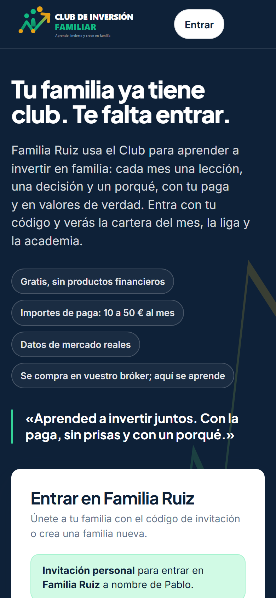</div><figcaption>Lo primero que ve al abrir el enlace.</figcaption></figure>
      <figure><div class="phone">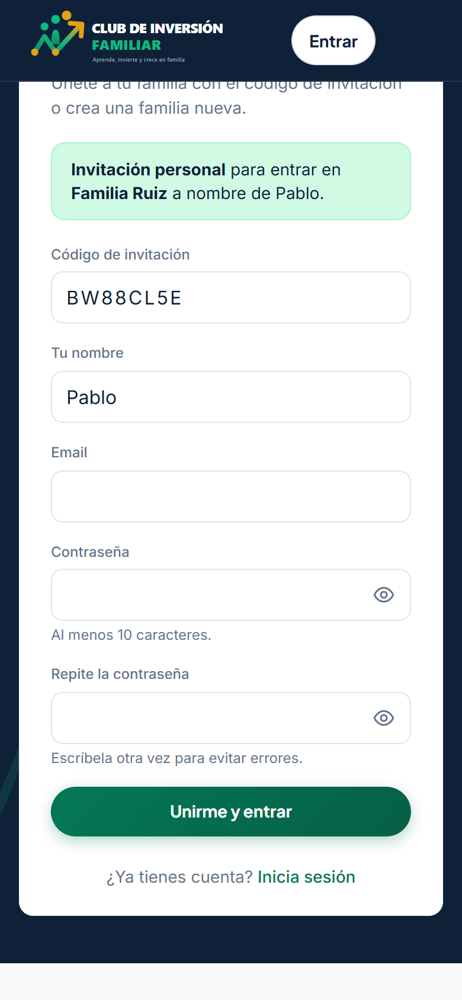</div><figcaption>El alta, con su invitación reconocida.</figcaption></figure>
      <figure><div class="phone">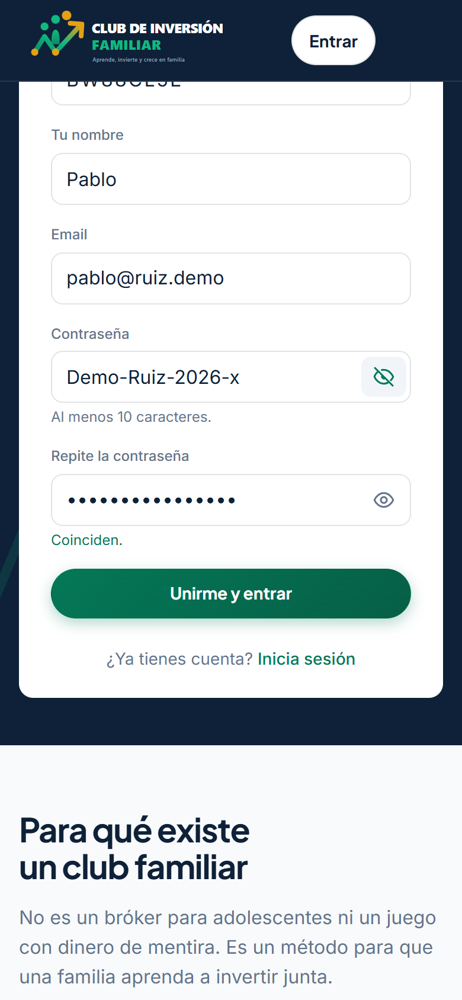</div><figcaption>Contraseña repetida y el ojo para verla.</figcaption></figure>
    </div>
    <div class="notes">
      <div class="note why"><h3>Por qué importa</h3><p>Antes de pedirle nada le explica a qué entra: aprender a invertir en familia, con su paga y en valores de verdad. Llega sabiendo para qué está ahí.</p></div>
      <div class="note"><h3>Un detalle</h3><p>El móvil que puso su madre al invitarle pasa a su cuenta: los avisos de cada cartera le llegarán sin rellenar nada.</p></div>
    </div>
  </section>

  <section class="moment" id="bienvenida" aria-labelledby="t3">
    <div class="moment-head"><span class="num" aria-hidden="true">3</span><h2 id="t3">La bienvenida, en tres pantallas</h2></div>
    <p class="intro">Nada más darse de alta entra en una bienvenida corta, hablándole de tú. Se la puede saltar, pero en dos minutos le deja claras tres cosas: su paga es suya, decide él aunque compre un adulto, y lo que más cuenta es su porqué.</p>
    <div class="phones">
      <figure><div class="phone scroll">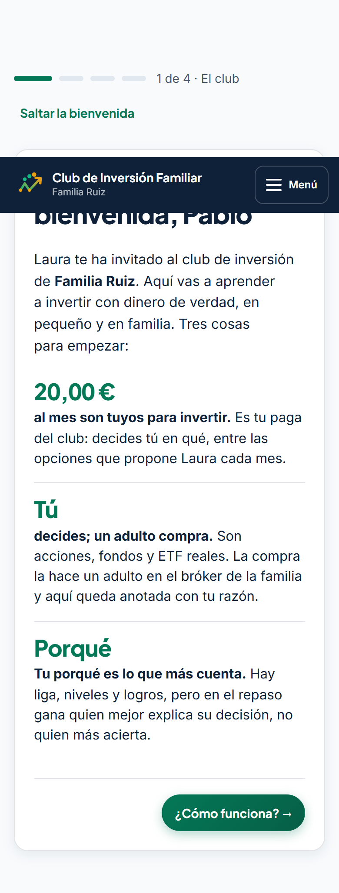</div><figcaption>El club en tres ideas.</figcaption></figure>
      <figure><div class="phone scroll">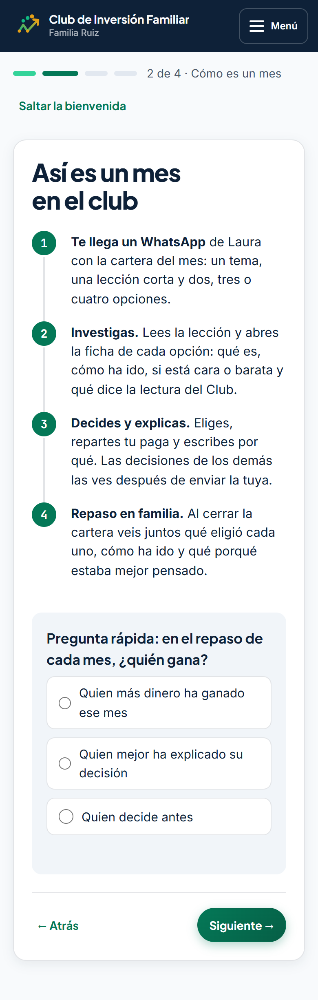</div><figcaption>Cómo es un mes, en cuatro momentos.</figcaption></figure>
      <figure><div class="phone scroll">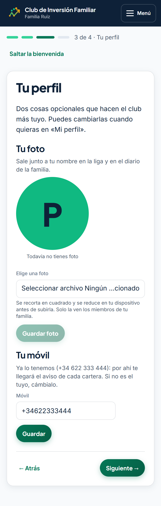</div><figcaption>Foto y móvil (ya puesto).</figcaption></figure>
    </div>
    <div class="phones">
      <figure><div class="phone">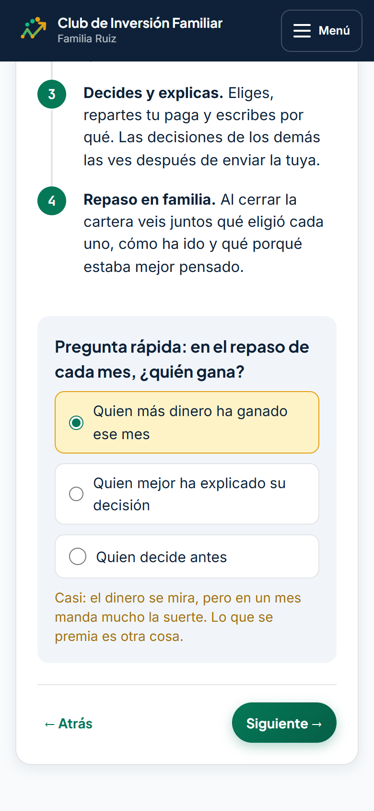</div><figcaption>Si contesta «quien más gana»…</figcaption></figure>
      <figure><div class="phone">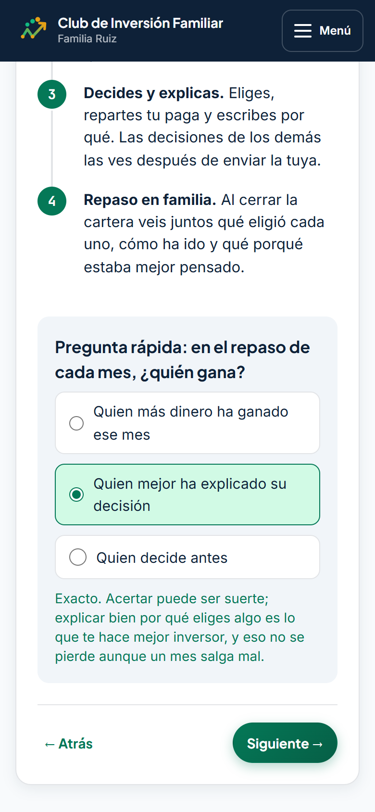</div><figcaption>…y cuando acierta.</figcaption></figure>
    </div>
    <div class="notes">
      <div class="note why"><h3>Por qué importa</h3><p>La pregunta rápida fija la idea central del club antes de tocar un euro: en el repaso gana quien mejor explica su decisión, no quien más acierta.</p></div>
      <div class="note say"><h3>Para contarlo</h3><p>«En dos minutos entiende el juego: es su dinero, decide él y lo que se valora es pensarlo bien.»</p></div>
    </div>
  </section>

  <section class="moment" id="aviso" aria-labelledby="t4">
    <div class="moment-head"><span class="num" aria-hidden="true">4</span><h2 id="t4">Le llega el aviso de la cartera del mes</h2></div>
    <p class="intro">Cuando su madre publica la cartera, le manda un WhatsApp hecho para él: su nombre, su importe, el plazo, cuántas opciones puede elegir y el enlace directo para decidir.</p>
    <div class="phones">
      <div class="chat" role="img" aria-label="Mensaje de WhatsApp de Laura con la cartera del mes">
        <p class="from">Laura (mamá)</p>
        <div class="bubble">¡Hola, Pablo! La cartera de octubre de 2026 ya está lista: <b>Núcleo global de bajo coste</b>.

Tienes 20,00 € para invertir entre 4 opciones (elige de 1 a 3), hasta el 26/10/2026.

No vale elegir al azar: lee la lección, mira la ficha de cada valor y escribe tu porqué. Ese porqué es lo que de verdad te hace mejor inversor, y lo que la familia leerá después.

Entra aquí y decide: <span class="link">clubdeinversionfamiliar.com/cartera</span>

Laura · Club de Inversión de Familia Ruiz<time>20:15</time></div>
      </div>
    </div>
    <div class="notes">
      <div class="note"><h3>Qué ve</h3><p>Todo lo que necesita en un mensaje: cuánto, hasta cuándo y qué se le pide. Un toque lleva directo a la cartera.</p></div>
      <div class="note why"><h3>Por qué importa</h3><p>El mensaje no dice «compra esto»: dice «lee, mira y explica». El tono educativo empieza en el propio aviso.</p></div>
    </div>
  </section>

  <section class="moment" id="mision" aria-labelledby="t5">
    <div class="moment-head"><span class="num" aria-hidden="true">5</span><h2 id="t5">Su primera misión y la cartera del mes</h2></div>
    <p class="intro">La última pantalla de la bienvenida le da una misión concreta: tiene 20 € por decidir antes del 26 de octubre. En la cartera, como es su primera vez, ve una guía de tres pasos antes del formulario.</p>
    <div class="phones">
      <figure><div class="phone">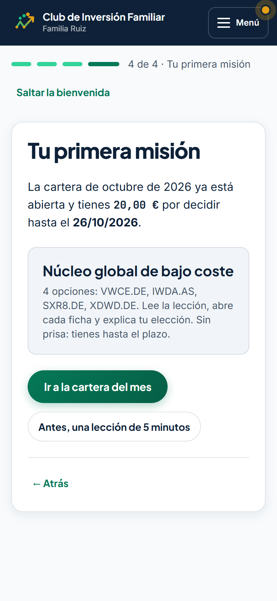</div><figcaption>La misión, con importe y plazo.</figcaption></figure>
      <figure><div class="phone">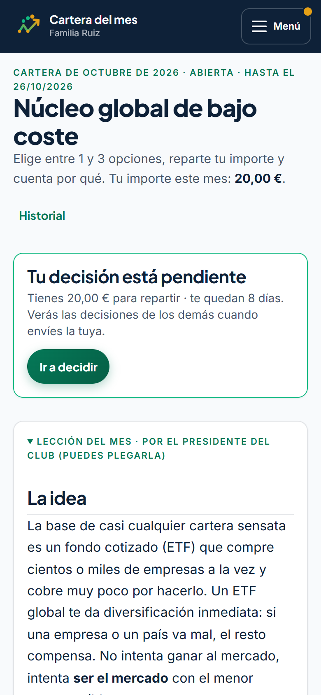</div><figcaption>La cartera y su lección.</figcaption></figure>
      <figure><div class="phone">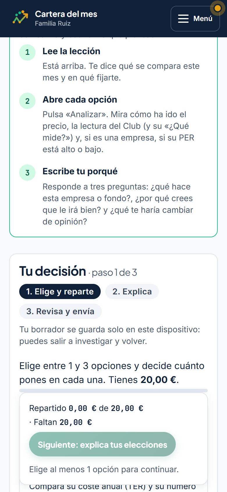</div><figcaption>La guía de su primera decisión.</figcaption></figure>
    </div>
    <div class="notes">
      <div class="note"><h3>La guía, en tres pasos</h3><p>Lee la lección. Abre cada opción con «Analizar» y mira la lectura del Club y el PER. Escribe tu porqué respondiendo a: ¿qué hace?, ¿por qué crees que le irá bien? y ¿qué te haría cambiar de opinión?</p></div>
      <div class="note why"><h3>Por qué importa</h3><p>No hace falta saber de bolsa; hace falta mirar con calma. La guía convierte «no sé qué hacer» en tres pasos que cualquiera puede seguir.</p></div>
    </div>
  </section>

  <section class="moment" id="decide" aria-labelledby="t6">
    <div class="moment-head"><span class="num" aria-hidden="true">6</span><h2 id="t6">Decide y explica, en tres pasos</h2></div>
    <p class="intro">Pablo elige dos fondos parecidos y reparte: 12 € al mundo entero y 8 € a otro de la misma idea, para comparar costes. Luego escribe por qué eligió cada uno y qué le haría vender, revisa y envía.</p>
    <div class="phones">
      <figure><div class="crop scroll">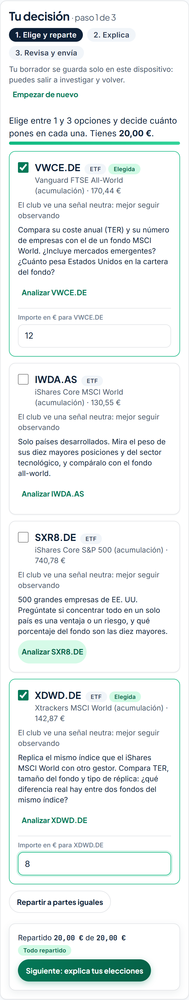</div><figcaption>1 · Elige y reparte.</figcaption></figure>
      <figure><div class="crop scroll">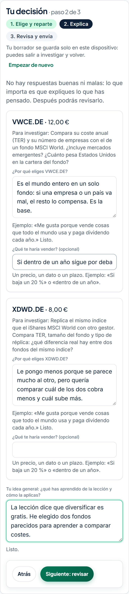</div><figcaption>2 · Explica su porqué.</figcaption></figure>
      <figure><div class="crop scroll">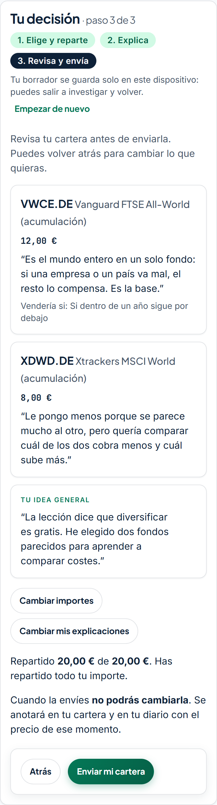</div><figcaption>3 · Revisa y envía.</figcaption></figure>
    </div>
    <div class="notes">
      <div class="note"><h3>Qué le pide</h3><p>Al menos unas líneas de porqué por cada opción y una idea general sobre la lección. «Qué te haría vender» es opcional, con ejemplos para que se entienda.</p></div>
      <div class="note why"><h3>Por qué importa</h3><p>«No hay respuestas buenas ni malas: lo que importa es que expliques lo que has pensado.» Escribirlo es lo que convierte una apuesta en una decisión.</p></div>
      <div class="note say"><h3>Para contarlo</h3><p>«Fíjate en lo que escribe un chaval de 16 años cuando le pides que lo explique: compara costes y piensa en el riesgo.»</p></div>
    </div>
  </section>

  <section class="moment" id="despues" aria-labelledby="t7">
    <div class="moment-head"><span class="num" aria-hidden="true">7</span><h2 id="t7">Enviada: ahora ve lo que han elegido los demás</h2></div>
    <p class="intro">Su decisión queda en su cartera y en su diario. Solo ahora, después de enviar la suya, ve qué ha elegido el resto de la familia y por qué: así nadie copia.</p>
    <div class="phones">
      <figure><div class="phone">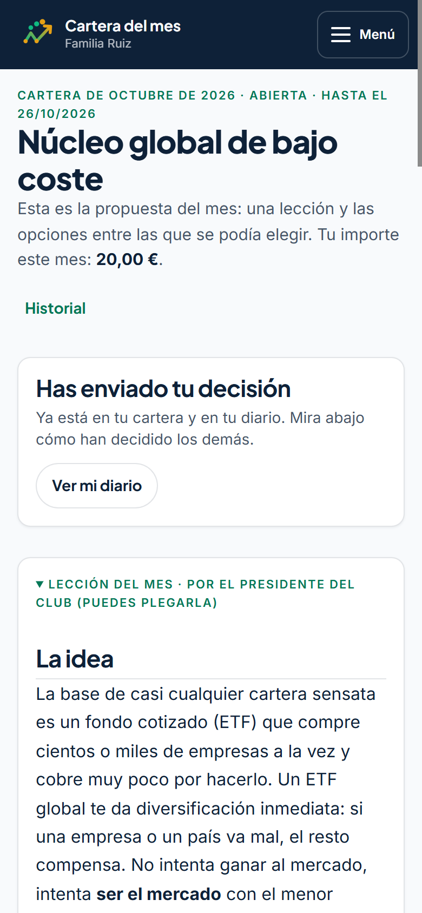</div><figcaption>Confirmación de su decisión.</figcaption></figure>
      <figure><div class="crop">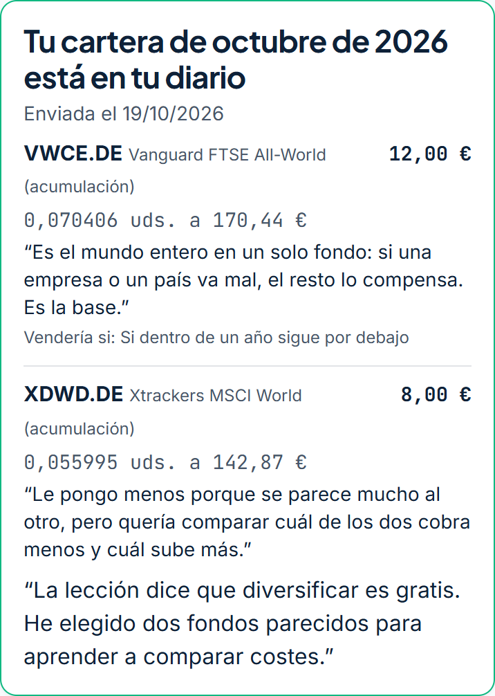</div><figcaption>Su decisión, con su idea general.</figcaption></figure>
      <figure><div class="crop">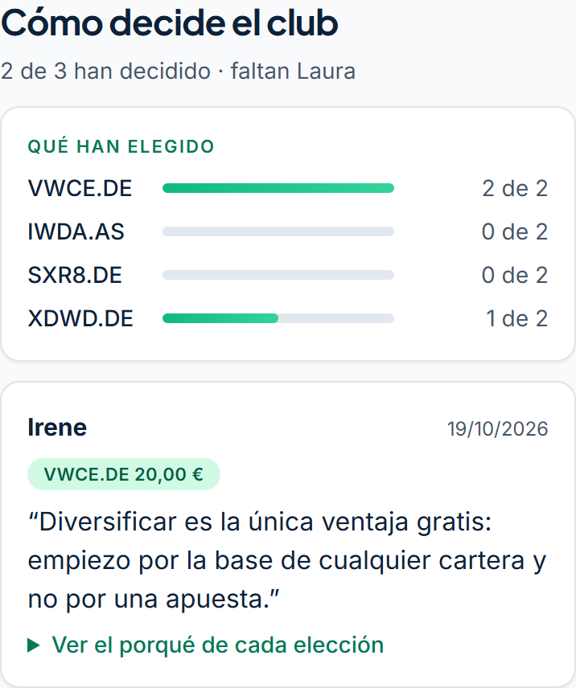</div><figcaption>Lo que han elegido los demás.</figcaption></figure>
    </div>
    <div class="notes">
      <div class="note why"><h3>Por qué importa</h3><p>Ver el porqué de su hermana después de escribir el suyo abre la conversación: los dos eligieron el ETF mundial, por razones parecidas pero no iguales.</p></div>
      <div class="note"><h3>Después, en Inicio</h3><p>Su Inicio le propone el siguiente paso, la primera lección de la Academia, y le enseña sus primeros pasos: tres de cuatro hechos.</p></div>
    </div>
    <div class="phones">
      <figure><div class="phone">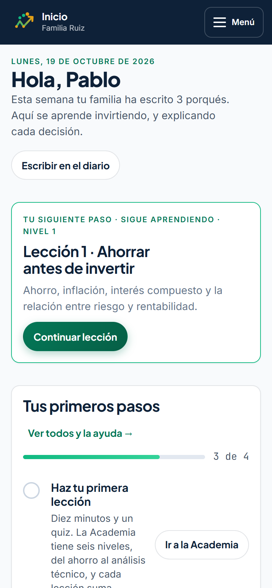</div><figcaption>Su Inicio después de decidir.</figcaption></figure>
    </div>
  </section>

  <section class="moment" id="repaso" aria-labelledby="t8">
    <div class="moment-head"><span class="num" aria-hidden="true">8</span><h2 id="t8">El repaso en familia</h2></div>
    <p class="intro">Cuando termina el plazo y su madre cierra la cartera, Pablo puede abrir el repaso: la guía para hacerlo juntos y, debajo, cómo le ha ido a cada uno con su porqué entre comillas.</p>
    <div class="phones">
      <figure><div class="crop">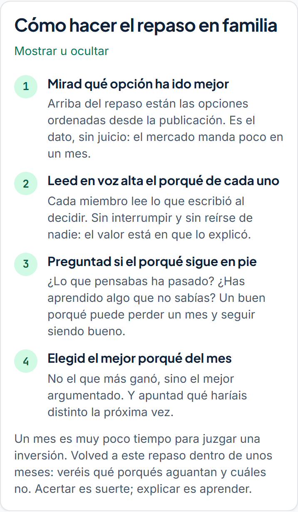</div><figcaption>La guía del repaso.</figcaption></figure>
      <figure><div class="crop scroll">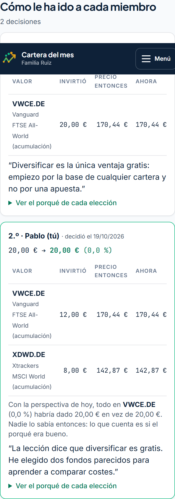</div><figcaption>Cómo le ha ido a cada uno.</figcaption></figure>
    </div>
    <div class="notes">
      <div class="note why"><h3>Por qué importa</h3><p>En el repaso se elige el mejor porqué del mes, no el que más ganó. Pablo aprende que una buena razón puede tener un mal mes y seguir siendo buena.</p></div>
      <div class="note say"><h3>Para contarlo</h3><p>«La conversación de la cena sale sola: ¿por qué elegiste ese? ¿Sigues pensando lo mismo?»</p></div>
    </div>
  </section>

  <section class="aside" aria-labelledby="t-notas">
    <h2 id="t-notas">Antes de enseñarlo</h2>
    <ul class="caveats">
      <li><b>Datos de ejemplo.</b> La Familia Ruiz, sus móviles y sus decisiones son inventados; las cotizaciones son reales del día de la captura.</li>
      <li><b>Todo pasa el mismo día.</b> Por eso el repaso no muestra diferencias de rentabilidad. En un club real se hace semanas después.</li>
      <li><b>Los mensajes de WhatsApp</b> son el texto exacto que genera el Club; aquí se muestran con el dominio de la web real, que es como llegan.</li>
      <li><b>Pantallas de móvil</b> a 390 px de ancho, que es como lo usarán la mayoría de los hijos. El recorrido del presidente está en otra página.</li>
      <li><b>Para repetirlo en la copia local</b>: <code>npx tsx --env-file=.env scripts/seed-onboarding-demo.ts</code> crea la Familia Ruiz; Laura invita a sus hijos desde «Pon en marcha tu club» y cada invitación se abre en otra ventana.</li>
    </ul>
  </section>

</main>
